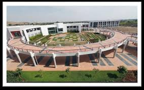
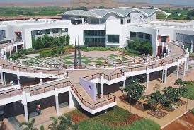
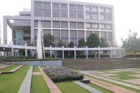
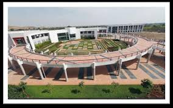
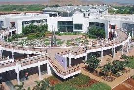
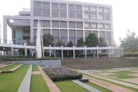

Overview
The amphitheatre at MET BKC is a beautifully designed open-air space ideal for cultural events, student performances, seminars, and other group activities. It fosters creativity and engagement by providing a scenic, interactive environment.
Facilities
- Spacious seating for large student audiences
- Stage with sound and lighting system
- Open-air design with acoustic optimization
- Used for college fests, musical nights, debates, and more
Usage & Access
Managed by the student cultural committee, the amphitheatre is available upon prior booking. It is actively used during annual gatherings, guest lectures, and talent shows across institutes.